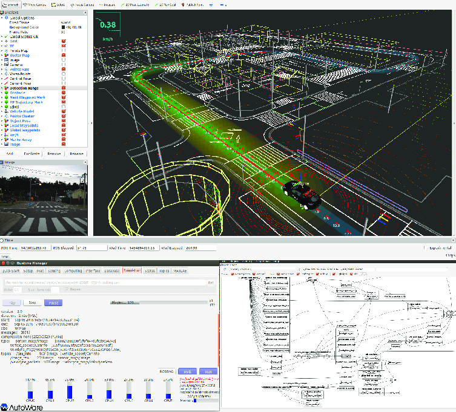

EARS-CONN 2026 — NEW YORK CITY — AUGUST 24–27, 2026 — Embodied-AI meets digital-earth for Resiliency and Sustainability assurance in CONNected cities (EARS-CONN)
A hands-on workshop co-hosted with Tier IV and the Autoware Foundation —
training the next generation of engineers to fuse vehicle intelligence with urban sensing
for resilient, safer connected cities.
When: August 25, 2026 (Day 2 of EARS-CONN)Location: New York City — CCNYFormat: Hands-on training + Hackathon
Autoware training seats are limited — pre-register for the hands-on session. General conference registration is separate.
Autonomous vehicles are mobile embodied-AI platforms — continuously mapping, perceiving, and reasoning about the urban environment from the ground up. This workshop explores how their intelligence, powered by Autoware, can be fused with satellite remote sensing to build a living Digital-Earth that enables smarter city planning, more resilient urban infrastructure, and a new generation of proactive insurance intelligence — all in real time. Satellite imagery captures the wide-area hazard picture, but remote sensing alone cannot resolve the ground-level detail that dense urban environments demand: roof conditions, façade integrity, drainage micro-topography, and structural vulnerability. Embodied-AI robotics fill this gap, turning autonomous vehicle fleets into continuous urban observatories whose data feeds directly into property-specific digital twins for risk assessment and insurance.

Autoware — The Open-Source Autonomous Driving Stack
Participants will get hands-on training with
Autoware by Tier IV,
the world's leading open-source software stack for self-driving vehicles. Built on ROS 2, Autoware provides
a complete pipeline from sensor ingestion to route planning:
LiDAR, radar, and camera perception pipelines
3-D object detection and tracking in real time
HD mapping, localization, and lane-level path planning
Sensors & Perception in the Future Generation of Vehicles
Modern autonomous vehicles carry a rich suite of sensors that double as urban observatories.
Participants will learn how the sensor stack — and the software that processes it — enables
vehicles to serve as real-time data sources for urban intelligence:
Solid-state LiDAR, 360° camera arrays, and millimeter-wave radar
GNSS/IMU fusion for centimeter-accurate positioning
Edge AI inference on embedded compute platforms
V2X (vehicle-to-everything) communication for city-scale awareness
Hackathon — Fusing AV Data with Remote Sensing for Emergency Response
The afternoon session becomes a competitive hackathon. Teams will combine Autoware perception outputs
with satellite and drone remote-sensing feeds to build rapid-response urban intelligence layers —
think flood routing, post-earthquake damage mapping, wildfire evacuation planning, or property-level insurance risk scoring for NYC. These scenarios illustrate why satellite data alone is not sufficient: robotic ground-truth fills the precision gap that aerial imagery cannot, enabling property-specific digital twins that insurers, city planners, and emergency managers all depend on.

 EARS-CONN 2026 — NEW YORK CITY — AUGUST 24–27, 2026 — Embodied-AI meets digital-earth for Resiliency and Sustainability assurance in CONNected cities (EARS-CONN)
EARS-CONN 2026 — NEW YORK CITY — AUGUST 24–27, 2026 — Embodied-AI meets digital-earth for Resiliency and Sustainability assurance in CONNected cities (EARS-CONN)